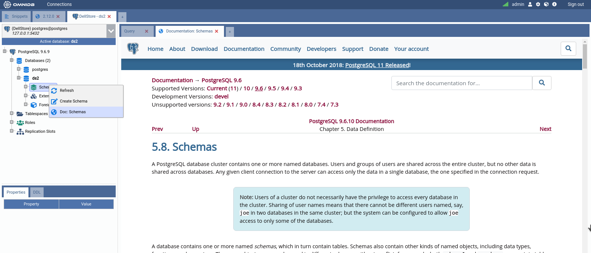
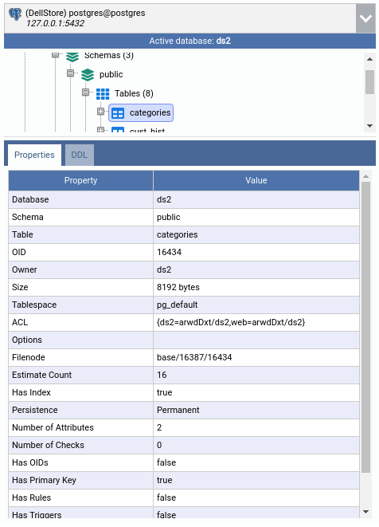
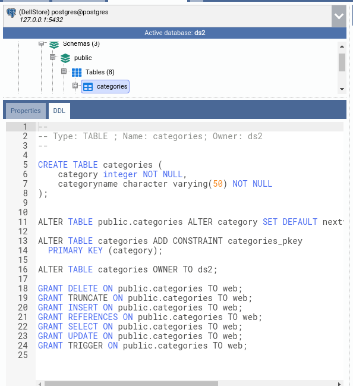
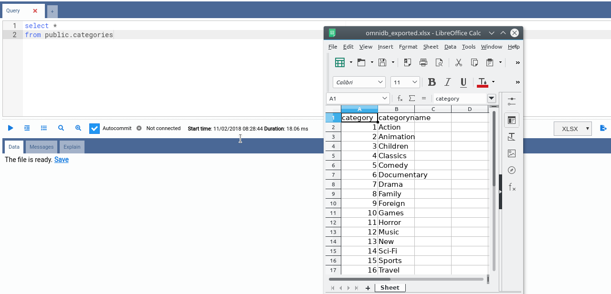
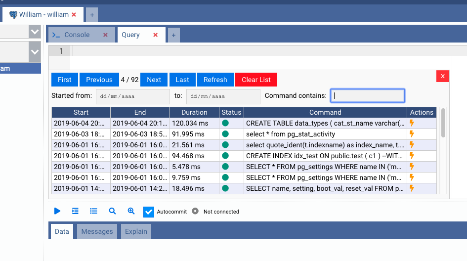
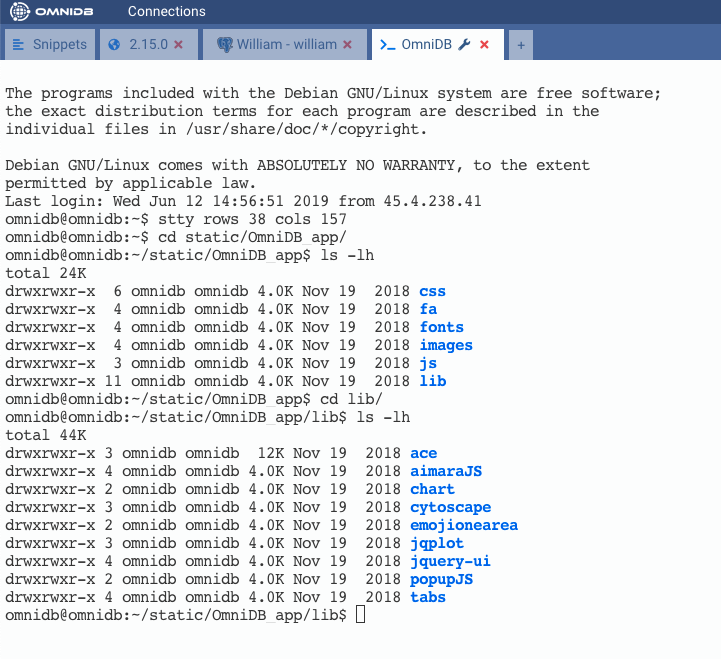

Další funkce
Tato kapitola shrnuje drobnější funkce, které nepotřebují vlastní kapitolu. Několik funkcí, které byly dříve popsány zde, má nyní vlastní kapitoly: Nastavení a jazyky, Snippety, Oznámení, Připojení uživatelé (nahrazuje dřívější nabídku Připojení serveru (Backends) ve stromu) a Role a oprávnění.
Úvodní stránka Vítejte
Ikona Vítejte nahoře na levé liště otevře úvodní stránku s tlačítkem Začínáme, upozorněním, že většina akcí komunikuje přímo s databází, ke které jste připojeni (takže si zkoušejte práci raději v testovacím prostředí než v produkci), odkazy na web OmniDB, repozitář na GitHubu a tuto dokumentaci a s verzí, kterou používáte.
Průvodce Začínáme
Ikona žárovky u spodní části lišty (Začínáme; v desktopové aplikaci také Nápověda > Začínáme) otevře seznam interaktivních průvodců, kteří krok za krokem zvýrazňují příslušné části obrazovky: vytvoření uživatele OmniDB (jen v serverové verzi), vytvoření databázového připojení, vytvoření terminálového připojení, seznámení s panelem snippetů, používání připojení a záložky připojení (dostupné, jakmile je nějaké připojení otevřené). Tlačítkem Ukončit průvodce můžete průvodce kdykoli opustit.
Kontextová nápověda
Většina uzlů stromu (obvykle seskupujících, jako jsou Schémata nebo Tabulky) nabízí kontextovou nápovědu. K této funkci se dostanete kliknutím pravým tlačítkem na uzel stromu. Když kliknete na volbu Doc: …, OmniDB otevře konkrétní stránku online dokumentace PostgreSQL ve vašem webovém prohlížeči (v desktopové aplikaci v systémovém výchozím prohlížeči, při běhu jako prohlížečový OmniDB Server jako nová karta). Zároveň zohlední verzi PostgreSQL, ke které jste připojeni, a přesměruje na odpovídající stránku.

Vlastnosti a DDL
Kliknutím na většinu objektů ve stromovém zobrazení (tabulky, sekvence, pohledy, role, databáze atd.) si uživatel může zobrazit velmi podrobný seznam vlastností daného objektu.

Na dalším panelu s názvem DDL si uživatel může prohlédnout zdrojový SQL
kód DDL, který lze použít k opětovnému vytvoření objektu — včetně jeho komentáře
(COMMENT ON …) a oprávnění (GRANT …), pokud je databáze má.
Uživatel může tento text zkopírovat a vložit, kam potřebuje.

Dělicí čáru nad panelem Vlastnosti/DDL lze přetáhnout a panel (stejně jako samotný strom databáze) lze sbalit malým přepínacím tlačítkem na jeho dělicí čáře — v desktopové aplikaci také přes Zobrazit > Přepnout panel vlastností/DDL a Zobrazit > Přepnout strom databáze.
Export dat
Karta dotazu umí uložit výsledky svého dotazu do souboru CSV, TSV, XLSX, JSON, XML nebo Markdown. Vyberte formát v rozbalovacím seznamu vedle tlačítka Exportovat data a klikněte na tlačítko: OmniDB dotaz na pozadí spustí znovu a zapíše celý výsledek do souboru (export lze během běhu zrušit).
- V desktopové aplikaci se otevře nativní dialog Uložit jako, ve kterém zvolíte, kam soubor uložit, a OmniDB to potvrdí zprávou Soubor exportován do: ….
- V prohlížeči (serverová verze) oblast výsledků zobrazí Soubor je připraven. s odkazem Uložit, který soubor stáhne.

Soubory CSV a TSV používají kódování nastavené v Nastavení > Export > Kódování
CSV/TSV (výchozí: UTF-8 with BOM) a soubory CSV Oddělovač CSV nastavený tamtéž
(výchozí ;). Exportované soubory se uchovávají v dočasné složce uvnitř domovského
adresáře OmniDB, stáhnout je může jen uživatel, který je vytvořil, a po 24 hodinách se
automaticky odstraní.
Export do DBML
Klepnutím pravým tlačítkem na uzel databáze ve stromu PostgreSQL a volbou Exportovat jako DBML vygenerujete schéma celé databáze jako dokument DBML (Database Markup Language) — všechny tabulky, sloupce, datové typy, primární klíče, unikátní a cizí klíče, indexy i komentáře — pomocí jediného čistě SQL introspekčního dotazu převzatého z projektu pg_dbml.
DBML je kompaktní textový formát schématu, díky čemuž se skvěle hodí jako kontext o databázi pro
LLM/AI asistenta: vložení souboru .dbml do konverzace stojí mnohem méně tokenů než
vkládání celého SQL dumpu nebo nechání modelu spouštět vlastní introspekční dotazy tabulku po
tabulce, a přitom přesně popisuje každou tabulku, sloupec, typ i vztah.
Vygenerovaný soubor má výchozí název <databáze>.dbml. V desktopové aplikaci se
otevře nativní dialog Uložit, stejně jako u Export dat; v prohlížeči (server) se místo
toho zobrazí výzva Stáhnout/Zrušit — Zrušit vygenerovaný soubor rovnou
zahodí, místo aby čekal na pravidelné čištění dočasné složky po 24 hodinách. Zatím pouze pro
PostgreSQL.
Historie dotazů
Na kartě dotazu můžete kliknout na tlačítko Historie příkazů a zobrazit si úplný, procházitelný a prohledávatelný seznam příkazů spuštěných na tomto připojení, který lze filtrovat podle rozsahu dat a textu. Viz Psaní SQL dotazů.

SSH konzole
Kromě databázových připojení umí OmniDB otevřít i plnohodnotný SSH terminál na server. V sekci Připojení vytvořte připojení typu Terminál a vyplňte SSH server, port, uživatele a heslo nebo soukromý klíč (viz Vytváření uživatelů a připojení). Otevřete ho přes + na konci pruhu záložek připojení → SSH konzole, nebo tlačítkem Připojit v jeho formuláři. Terminál se otevře jako samostatná záložka připojení; klíč hostitele serveru už musí být známý — viz Zabezpečení a víceuživatelský server.
